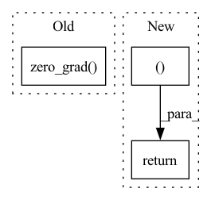

Pattern ID :8822
Before Change
target_v_value = (new_min_curr_state_q_value - new_curr_state_log_pi).detach()
v_loss = F.mse_loss(curr_state_v_value, target_v_value)
v_loss_value = v_loss.detach().cpu().numpy()
self.v_optimizer.zero_grad()
v_loss.backward()
self.v_optimizer.step()
//compute q lossAfter Change
alpha_loss = torch.tensor(0.).to(util.device)
alpha_value = self.alpha.detach().cpu().numpy()
self.tot_update_count += 1
return q1_loss_value, q2_loss_value, policy_loss_value, alpha_loss_value, alpha_value
def try_update_target_network(self):
if self.tot_update_count % self.update_target_network_interval == 0:
util.soft_update_network(self.q1_network, self.target_q1_network, self.target_smoothing_tau)In pattern: SUPERPATTERN
Frequency: 5
Non-data size: 3
Instances Fragment ID: 32493256
Project Name: x35f/unstable_baselines
Commit Name: 0fc82ae6328814fe2dad0c8e0ae1b172d3e5f981
Time: 2021-03-12
Author: ym8411012@126.com
File Name: sac/models.py
M Class Name: SACAgent
N Class Name: SACAgent
M Method Name: update(2)
N Method Name: update(2)
M Parent Class: BaseAgent,torch.nn.Module
N Parent Class: BaseAgent,torch.nn.Module
M File Name: sac/models.py
N File Name: sac/models.py
M Start Line: 75
M End Line: 129
N Start Line: 83
N End Line: 129
Before Change
self.model.eval()
else:
self.model.train()
self.optimizer.zero_grad()
loss = None
sample_size = 0
logging_output = {After Change
else:
raise e
return loss, sample_size, logging_output, oom
def _backward(self, loss):
oom = 0
if loss is not None: Fragment ID: 32493255
Project Name: kssteven418/i-bert
Commit Name: 2d27ae084ab1a376344d3fe803e35b8d5cbd81b6
Time: 2018-06-15
Author: edunov@apache.org
File Name: fairseq/trainer.py
M Class Name: Trainer
N Class Name: Trainer
M Method Name: _forward(3)
N Method Name: _forward(3)
M Parent Class: object
N Parent Class: object
M File Name: fairseq/trainer.py
N File Name: fairseq/trainer.py
M Start Line: 130
M End Line: 165
N Start Line: 161
N End Line: 184
Before Change
loss = loss.sum(dim=0)
valid_loss += loss.item()
self.optimizer.zero_grad()
if idx < 5:
for _mixture_resampled, _estimated_sources in zip(mixture_resampled, estimated_sources):
print(_mixture_resampled.size(), _estimated_sources.size())After Change
valid_similarity_loss /= n_valid
valid_dissimilarity_loss /= n_valid
return valid_loss, valid_main_loss, valid_reconstruction_loss, valid_similarity_loss, valid_dissimilarity_loss Fragment ID: 32493254
Project Name: tky823/dnn-based_source_separation
Commit Name: 5abf28af1871d3f13e68fb3a3fd9aa859488461f
Time: 2021-08-13
Author: 40362510+tky823@users.noreply.github.com
File Name: egs/musdb18/meta-tasnet/src/adhoc_driver.py
M Class Name: Trainer
N Class Name: Trainer
M Method Name: run_one_epoch_eval(2)
N Method Name: run_one_epoch_eval(2)
M Parent Class: TrainerBase
N Parent Class: TrainerBase
M File Name: egs/musdb18/meta-tasnet/src/adhoc_driver.py
N File Name: egs/musdb18/meta-tasnet/src/adhoc_driver.py
M Start Line: 240
M End Line: 315
N Start Line: 240
N End Line: 328